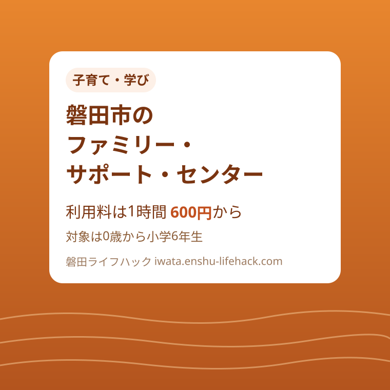

子育て・学び
磐田市のファミリー・サポート・センター｜利用料は1時間600円から、対象は0歳から小学6年生

この記事の要点
Q. 磐田市で、急な用事のときに子どもを一時的に預かってもらえる仕組みはありますか？
A. ファミリー・サポート・センターがあります。対象は0歳児から小学6年生で、利用料は1時間あたり平日600円、平日の早朝・夜間700円、土日祝800円。まず事務局（電話0538-37-4102）へ依頼内容と日時を伝え、マッチングできたら来館して登録します（登録料1,000円）。
導入——急な用事の日に、子どもを頼める先はあるか
自分の歯医者の予約が入った。上の子の学校行事と、下の子の預け先が重なった。実家は遠く、頼れる人が近くにいない。子育ての日常では、こういう「数時間だけ手が足りない」場面が何度も訪れます。
磐田市には、そんな場面のための仕組みとして、ファミリー・サポート・センターがあります。地域の人たちが子育てを支えあう事業で、講習を受けた地域の方が、一時的に子どもの世話を手伝ってくれます。
この記事では、磐田市の公式ページ「ファミリー・サポート・センター」（ページ番号1001762）と、同じページに掲載された利用案内のチラシで確認した範囲に絞って、対象、利用料、登録までの段取りを整理します。
先に結論を書きます。利用は「電話が先、登録は後」です。まず事務局へ電話して依頼内容と日時を伝え、援助できる方とマッチングできたら、センターへ来館して会員登録をします。思い立った当日にすぐ預けられる仕組みではない、という点が最初の注意点です。
なお、利用料は時間帯で変わります。平日は1時間600円、平日の早朝と夜間は700円、土曜日・日曜日・祝日は800円です。金額の見通しが立つと、頼む場面を具体的に考えやすくなります。
まず、公式資料から事実を整理する
ファミリー・サポート・センターとは、市によると「冠婚葬祭や兄弟の学校行事等で、一時的に子どもの世話の手助けが必要な時に、講習を受けた地域の方がお手伝いをする有償ボランティア事業」です。無料の善意ではなく、利用料を払って頼む、地域の支え合いの仕組みです。
利用する側は「依頼会員」、預かってくれる側は「援助会員」と呼ばれます。市の案内では、お願いしたい人と預かってくれる人の両方とも、登録が必要とされています。預ける側だけが登録する仕組みではありません。
援助の対象は、0歳児から小学校6年生までの子どもです。乳児から小学校高学年までと幅が広く、未就園児の一時的な預かりと、小学生の放課後の預かりや送迎の両方を想定した制度になっています。
援助できる内容として市が挙げているのは、保育施設や学校などの送迎、学校や保育施設が終わった後の預かり、そして保護者の外出の際の預かりです。利用案内のチラシには、依頼会員の声として「歯医者に行きたいから子どもを預けたい」「子どもの習い事の送迎が仕事で間に合わない」「実家が遠くて何かあった時に困る」といった場面が紹介されています。
利用料は1時間あたりで、平日600円、平日の早朝（午前9時まで）と深夜（午後7時から）は700円、土曜日・日曜日・祝日（年末年始の12月29日から1月3日を含む区分）は800円です。たとえば平日の昼間に2時間預かってもらえば1,200円、土曜日の3時間なら2,400円が目安になります。
登録料は1,000円（税込）です。ただし登録のタイミングには順番があります。まずセンターへ電話で問い合わせ、依頼内容と日時を伝えます。センターがサポートできる援助会員をマッチングし、マッチングできた方が、センターへ来館して登録をする、という流れです。チラシには「すべての方にマッチングできるとは限りません」とも書かれています。

預かる側の援助会員になるには、養成講座を修了し、登録をすることが必要です。養成講座は年2回開催されていて、日程は市の広報に掲載されます。「預けたい」だけでなく「落ち着いたら預かる側に回りたい」という人にも、入口が用意されています。
磐田の暮らしに置き換える
事務局は、磐田市ファミリーサポートセンターです。子育て支援総合センター「のびのび」の中にあり、所在地は磐田市上大之郷51です。受付は午前9時から午後6時までで、第4木曜日と年末年始は休みです。問い合わせの電話は0538-37-4102です。
のびのびは、子育て支援総合センターとして、普段から親子が集う場所です。マッチング後の来館登録も同じ場所で済むため、「初めて行く市の施設で緊張する」という負担は比較的小さいはずです。子どもと一緒に立ち寄った経験がある家庭なら、なおさらです。
磐田市の暮らしで考えると、この制度が効くのは送迎の場面です。市域は南北に広く、保育園や小学校、習い事の場所が車での移動を前提に散らばっています。保護者の仕事の終わりが読めない日、きょうだいの行事が重なる日に、送迎と短時間の預かりを頼める先があるかどうかは、日常の組み立てやすさを左右します。
利用料の計算も、暮らしに置き換えると見え方が変わります。平日の夕方、仕事の都合で迎えが1時間遅れる日に頼めば700円の区分でも1時間700円です。タクシーで子どもを移動させるわけにはいきませんし、無理をして事故の危険を取るより、制度として用意された預かりを使う方が安全です。
一方で、マッチングはセンターまかせにはできません。依頼内容と日時を電話で具体的に伝えることが、マッチングの精度を上げます。「いつ、どこからどこへ、子どもは何歳か」を手元にメモしてから電話するのが、実務的な準備です。
年末年始の扱いは、区分の読み方に注意が要ります。利用料の表では12月29日から1月3日は土日祝と同じ800円の区分に置かれていますが、事務局自体は年末年始が休みです。年末年始に援助を受けたい場合は、早めに電話で相談しておく必要があります。

きょうだいがいる家庭では、対象年齢の幅も効いてきます。0歳児から小学6年生までが対象なので、園児と小学生のきょうだいを同じ仕組みの中で相談できます。行事の日に上の子は学校、下の子は預かり、といった組み立ても、窓口が一つだと相談が一度で済みます。
評価——良い点と、注文したい点
良い点は、利用料が時間帯ごとに明記されていることです。平日600円、早朝・夜間700円、土日祝800円と先に分かれば、「頼んだらいくらになるか分からない」という不安が消えます。有償ボランティアという位置づけも、頼む側の気兼ねを小さくします。
良い点はもう一つ、登録がマッチングの後にあることです。登録料1,000円を払ったのに頼める相手が見つからない、という順番の無駄が起きにくい設計です。電話で依頼内容を聞き取り、援助できる人を探してから登録に進む流れは、利用者側の負担を考えた段取りだと思います。
注文したい点は、市のページの更新日が2024年1月18日と、やや古いことです。利用料や受付時間は暮らしに直結する情報なので、内容が変わっていないなら、その旨を含めて確認日が新しいと、読む側は安心して予定に組み込めます。この記事では、チラシと県の施設情報とも照らして確認しましたが、利用前には電話で最新の条件を確かめてください。
注文したい点はもう一つ、支払いの方法や、キャンセルの扱いが市のページに明記されていない点です。利用料を援助会員へ直接渡すのか、後日まとめて払うのか。急な発熱で当日キャンセルしたらどうなるのか。初めて使う人が一番知りたい部分なので、利用案内の中でひと言あると、電話での確認事項が減ります。
マッチングできない場合がある、と正直に書かれている点は、良い点にも数えられます。期待だけを大きくして当日困るより、早めの相談が要る制度だと分かる方が、家庭の側も代替案を用意できます。
対案・結論——予定が立つ前に、電話番号だけでも控えておく
結論として、この制度は「困った日に初めて調べる」より、「困る前に段取りだけ知っておく」方が向いています。マッチングと来館登録という段取りがある以上、当日朝に電話して昼から預ける、という使い方は難しいからです。
対案はシンプルで、事務局の電話番号0538-37-4102を、かかりつけ医や園・学校の連絡先と同じ場所に控えておくことです。あわせて、子どもの年齢、預けたい場所と時間帯を言えるようにしておくと、最初の電話が短く済みます。
学校行事や通院のように、先の予定が分かっている用事は、決まった時点で早めに相談してください。マッチングには相手の都合も関わるため、早い相談ほど援助会員を見つけやすくなります。
預かる側に興味がある方は、市の広報に載る養成講座の日程を待ってください。年2回の開催です。子育てが一段落した世代の地域の力が、この制度を成り立たせています。
確認する順番
- 事務局（0538-37-4102、受付9時から18時、第4木曜日・年末年始は休み）へ電話し、依頼内容と日時、子どもの年齢を伝える
- センターが援助会員をマッチングする。マッチングできた場合は、子育て支援総合センター「のびのび」へ来館して依頼会員の登録をする（登録料1,000円・税込）
- 利用料の区分を確認する（平日1時間600円、平日の午前9時までと午後7時からは700円、土日祝は800円）。支払い方法とキャンセルの扱いも、このときに聞いておく
- 援助の当日は、送迎か預かりか、迎えの時刻と連絡方法を援助会員と直接確かめ合う。次回以降の依頼も、その都度センターへ相談する
電話をする前に、預けたい日の候補を二つほど用意しておくと、マッチングの相談が進みやすくなります。第一希望の日時に援助できる方がいなくても、別の日で調整できる場合があるからです。
急な発熱など、子どもの体調が理由の預かりは、この制度の想定とは別の場面です。その場合は、かかりつけ医や市の子育て相談の窓口とあわせて確認してください。制度ごとに得意な場面が違うので、使い分けが大切です。
家族で共有するための記録
ファミリー・サポートの情報は、実際に子どもを預ける段取りをする保護者だけが知っている、という状態になりがちです。けれども、急な用事は家族の誰にでも起こります。登録の有無と事務局の電話番号は、家族で共有しておいてください。
とくに、援助会員との顔合わせや登録を済ませた家庭では、「登録済みであること」自体を家族に伝えておくことが大事です。登録した本人に用事ができた日にこそ、この制度の出番が来るからです。
祖父母が近くに住んでいる家庭でも、祖父母自身の通院や用事で手が離せない日はあります。「頼れる人がいるから大丈夫」と決めつけず、もう一つの頼み先として制度を知っておくことが、家族全体の余裕になります。
大石の視点
ここからは公表情報ではなく、執筆者の見解です。不動産や介護の現場では、「子育ての助けが近くにあるか」が、住まい選びの静かな条件になることを感じます。駅からの距離や間取りほど表には出ませんが、頼れる人の有無は、暮らしの続けやすさを決める要素です。
ファミリー・サポートは、その「頼れる人」を、知り合いの有無ではなく制度として用意したものだと思います。利用料が決まっていて、事務局が間に入るからこそ、頼む側も頼まれる側も、好意の貸し借りにならずに済みます。
欲を言えば、マッチングの申し込みが電話だけでなく、オンラインでも相談を始められると、仕事の合間に動く保護者にはさらに使いやすくなります。入口の形は時代に合わせて変わっていくはずで、その進化に期待しています。
まとめ
磐田市のファミリー・サポート・センターは、0歳児から小学6年生を対象に、講習を受けた地域の方が送迎や一時的な預かりを手伝う有償ボランティア事業です。利用料は1時間あたり平日600円、平日の早朝・夜間700円、土日祝800円で、登録料は1,000円です。
段取りは、事務局への電話、マッチング、来館登録の順です。当日に駆け込む仕組みではないため、学校行事や通院の予定が分かった時点で、早めに相談してください。
数時間の助けが必要な日は、どの家庭にもあります。その日に慌てないための準備として、制度の存在と電話番号を、家族の連絡先の中に加えておいてください。
制度の内容は変わることがあります。実際に利用する前に、磐田市の公式ページと事務局で、最新の案内を確認してください。
- 対象は0歳児から小学6年生。送迎、放課後や外出時の預かりを、講習を受けた援助会員が担う有償ボランティア事業
- 利用料は1時間あたり平日600円、平日の早朝・夜間700円、土日祝800円。登録料は1,000円（税込）
- 段取りは電話、マッチング、来館登録の順。事務局は子育て支援総合センター「のびのび」内、電話0538-37-4102
参考にした公式情報
- ファミリー・サポート・センター／磐田市（ページ番号1001762、2026年11月12日確認）
- 子育てに関する支援／磐田市（2026年11月12日確認）
最終確認日：2026-11-12 ／ 本記事は公表情報と執筆者の見解を分けて記載しています。制度・数値・公開状況は変更される場合があるため、最新情報は磐田市公式ページでご確認ください。